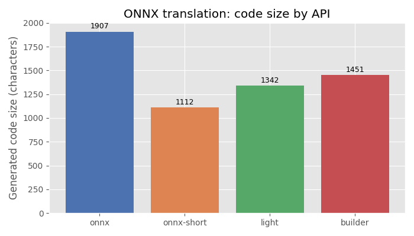

Note
Go to the end to download the full example code.
Comparing the four ONNX translation APIs¶
translate converts an
onnx.ModelProto into Python source code that, when executed,
recreates the same model. Four output APIs are available:
"onnx"— usesonnx.helper(oh.make_node,oh.make_graph, …) viaInnerEmitter."onnx-short"— same as"onnx"but replaces large initializers with random values to keep the snippet compact, viaInnerEmitterShortInitializer."light"— fluentstart(…).vin(…).…chain, viaLightEmitter."builder"—GraphBuilder-based function wrapper, viaBuilderEmitter.
This example builds a small model, translates it with every API, shows the
generated code, and verifies that the "onnx" snippet can be re-executed to
reproduce the original model.
import numpy as np
import onnx
import onnx.helper as oh
import onnx.numpy_helper as onh
from yobx.translate import translate, translate_header
Build the model¶
We use Z = Relu(X @ W + b) as a running example:
a single Gemm followed by Relu.
TFLOAT = onnx.TensorProto.FLOAT
INT64 = onnx.TensorProto.INT64
W = onh.from_array(np.random.randn(8, 5).astype(np.float32), name="W")
b = onh.from_array(np.random.randn(5).astype(np.float32), name="b")
model = oh.make_model(
oh.make_graph(
[
oh.make_node("Gemm", ["X", "W", "b"], ["T"]),
oh.make_node("Relu", ["T"], ["Z"]),
],
"gemm_relu",
[oh.make_tensor_value_info("X", TFLOAT, [None, 8])],
[oh.make_tensor_value_info("Z", TFLOAT, [None, 5])],
[W, b],
),
opset_imports=[oh.make_opsetid("", 17)],
ir_version=9,
)
print(f"Model: {len(model.graph.node)} node(s), {len(model.graph.initializer)} initializer(s)")
Model: 2 node(s), 2 initializer(s)
1. "onnx" API — full initializer values¶
The generated code uses onnx.helper.make_node(),
onnx.helper.make_graph(), and onnx.helper.make_model().
Every initializer is serialised as an exact np.array(…) literal.
=== api='onnx' ===
opset_imports = [
oh.make_opsetid('', 17),
]
inputs = []
outputs = []
nodes = []
initializers = []
sparse_initializers = []
functions = []
initializers.append(
onh.from_array(
np.array([[1.4014673233032227, -0.8653448224067688, -1.8771804571151733, -2.4498589038848877, -0.030206721276044846], [1.2071479558944702, 0.46448495984077454, -0.2727819085121155, -0.8432738780975342, -0.16906267404556274], [-0.19298197329044342, -0.14500941336154938, -0.34392282366752625, -2.2330358028411865, -0.6435778737068176], [-0.3559439778327942, 0.6454866528511047, 0.18586121499538422, -0.5620167851448059, 0.2915912866592407], [-1.5241327285766602, -0.2839086651802063, -0.648233950138092, -0.2800723612308502, -0.1443716585636139], [-1.3466551303863525, 0.5767227411270142, 1.1608481407165527, 0.7563561201095581, 0.9762552380561829], [-0.494290292263031, -0.5038745999336243, -1.4285184144973755, 0.6971754431724548, 0.5317066311836243], [-1.7354568243026733, -0.8955402374267578, -0.0373842716217041, -1.2610726356506348, -0.688063383102417]], dtype=np.float32),
name='W'
)
)
initializers.append(
onh.from_array(
np.array([0.9757246971130371, 1.0311360359191895, 0.08651291579008102, 0.8936258554458618, 0.3025415539741516], dtype=np.float32),
name='b'
)
)
inputs.append(oh.make_tensor_value_info('X', onnx.TensorProto.FLOAT, shape=(None, 8)))
nodes.append(
oh.make_node(
'Gemm',
['X', 'W', 'b'],
['T']
)
)
nodes.append(
oh.make_node(
'Relu',
['T'],
['Z']
)
)
outputs.append(oh.make_tensor_value_info('Z', onnx.TensorProto.FLOAT, shape=(None, 5)))
graph = oh.make_graph(
nodes,
'gemm_relu',
inputs,
outputs,
initializers,
sparse_initializer=sparse_initializers,
)
model = oh.make_model(
graph,
functions=functions,
opset_imports=opset_imports,
ir_version=9,
)
2. "onnx-short" API — large initializers replaced by random values¶
Identical to "onnx" except that initializers with more than 16 elements
are replaced by np.random.randn(…) / np.random.randint(…) calls.
This keeps the snippet readable when dealing with large weight tensors.
code_short = translate(model, api="onnx-short")
print("=== api='onnx-short' ===")
print(code_short)
=== api='onnx-short' ===
opset_imports = [
oh.make_opsetid('', 17),
]
inputs = []
outputs = []
nodes = []
initializers = []
sparse_initializers = []
functions = []
value = np.random.randn(8, 5).astype(np.float32)
initializers.append(
onh.from_array(
np.array(value, dtype=np.float32),
name='W'
)
)
initializers.append(
onh.from_array(
np.array([0.9757246971130371, 1.0311360359191895, 0.08651291579008102, 0.8936258554458618, 0.3025415539741516], dtype=np.float32),
name='b'
)
)
inputs.append(oh.make_tensor_value_info('X', onnx.TensorProto.FLOAT, shape=(None, 8)))
nodes.append(
oh.make_node(
'Gemm',
['X', 'W', 'b'],
['T']
)
)
nodes.append(
oh.make_node(
'Relu',
['T'],
['Z']
)
)
outputs.append(oh.make_tensor_value_info('Z', onnx.TensorProto.FLOAT, shape=(None, 5)))
graph = oh.make_graph(
nodes,
'gemm_relu',
inputs,
outputs,
initializers,
sparse_initializer=sparse_initializers,
)
model = oh.make_model(
graph,
functions=functions,
opset_imports=opset_imports,
ir_version=9,
)
Size comparison between the two onnx variants:
print(f"\nFull code length : {len(code_onnx):>6} characters")
print(f"Short code length : {len(code_short):>6} characters")
Full code length : 1907 characters
Short code length : 1112 characters
3. "light" API — fluent chain¶
The output is a single method-chain expression (start(…).vin(…).…).
code_light = translate(model, api="light")
print("=== api='light' ===")
print(code_light)
=== api='light' ===
(
start(opset=17)
.cst(np.array([[1.4014673233032227, -0.8653448224067688, -1.8771804571151733, -2.4498589038848877, -0.030206721276044846], [1.2071479558944702, 0.46448495984077454, -0.2727819085121155, -0.8432738780975342, -0.16906267404556274], [-0.19298197329044342, -0.14500941336154938, -0.34392282366752625, -2.2330358028411865, -0.6435778737068176], [-0.3559439778327942, 0.6454866528511047, 0.18586121499538422, -0.5620167851448059, 0.2915912866592407], [-1.5241327285766602, -0.2839086651802063, -0.648233950138092, -0.2800723612308502, -0.1443716585636139], [-1.3466551303863525, 0.5767227411270142, 1.1608481407165527, 0.7563561201095581, 0.9762552380561829], [-0.494290292263031, -0.5038745999336243, -1.4285184144973755, 0.6971754431724548, 0.5317066311836243], [-1.7354568243026733, -0.8955402374267578, -0.0373842716217041, -1.2610726356506348, -0.688063383102417]], dtype=np.float32))
.rename('W')
.cst(np.array([0.9757246971130371, 1.0311360359191895, 0.08651291579008102, 0.8936258554458618, 0.3025415539741516], dtype=np.float32))
.rename('b')
.vin('X', elem_type=onnx.TensorProto.FLOAT, shape=(None, 8))
.bring('X', 'W', 'b')
.Gemm()
.rename('T')
.bring('T')
.Relu()
.rename('Z')
.bring('Z')
.vout(elem_type=onnx.TensorProto.FLOAT, shape=(None, 5))
.to_onnx()
)
4. "builder" API — GraphBuilder¶
The output uses GraphBuilder to wrap the graph nodes in a Python function.
code_builder = translate(model, api="builder")
print("=== api='builder' ===")
print(code_builder)
=== api='builder' ===
def gemm_relu(
op: "GraphBuilder",
X: "FLOAT[None, 8]",
):
W = np.array([[1.4014673233032227, -0.8653448224067688, -1.8771804571151733, -2.4498589038848877, -0.030206721276044846], [1.2071479558944702, 0.46448495984077454, -0.2727819085121155, -0.8432738780975342, -0.16906267404556274], [-0.19298197329044342, -0.14500941336154938, -0.34392282366752625, -2.2330358028411865, -0.6435778737068176], [-0.3559439778327942, 0.6454866528511047, 0.18586121499538422, -0.5620167851448059, 0.2915912866592407], [-1.5241327285766602, -0.2839086651802063, -0.648233950138092, -0.2800723612308502, -0.1443716585636139], [-1.3466551303863525, 0.5767227411270142, 1.1608481407165527, 0.7563561201095581, 0.9762552380561829], [-0.494290292263031, -0.5038745999336243, -1.4285184144973755, 0.6971754431724548, 0.5317066311836243], [-1.7354568243026733, -0.8955402374267578, -0.0373842716217041, -1.2610726356506348, -0.688063383102417]], dtype=np.float32)
b = np.array([0.9757246971130371, 1.0311360359191895, 0.08651291579008102, 0.8936258554458618, 0.3025415539741516], dtype=np.float32)
T = op.Gemm(X, W, b, outputs=['T'])
Z = op.Relu(T, outputs=['Z'])
op.Identity(Z, outputs=["Z"])
return Z
g = GraphBuilder({'': 17}, ir_version=9)
g.make_tensor_input("X", onnx.TensorProto.FLOAT, (None, 8))
gemm_relu(g.op, "X")
g.make_tensor_output("Z", onnx.TensorProto.FLOAT, (None, 5), is_dimension=False, indexed=False)
model = g.to_onnx()
Round-trip verification¶
The "onnx" snippet is fully self-contained and executable.
Running it should recreate a model with the same graph structure.
header = translate_header("onnx")
full_code = header + "\n" + code_onnx
ns: dict = {}
exec(compile(full_code, "<translate>", "exec"), ns) # noqa: S102
recreated = ns["model"]
assert isinstance(recreated, onnx.ModelProto)
assert len(recreated.graph.node) == len(
model.graph.node
), f"Expected {len(model.graph.node)} nodes, got {len(recreated.graph.node)}"
assert len(recreated.graph.initializer) == len(model.graph.initializer), (
f"Expected {len(model.graph.initializer)} initializers, "
f"got {len(recreated.graph.initializer)}"
)
print("\nRound-trip succeeded ✓")
Round-trip succeeded ✓
Plot: code size by API¶
The bar chart compares the number of characters produced by each API for the
same model. "onnx-short" is always ≤ "onnx" because it compresses
large initializers.
import matplotlib.pyplot as plt # noqa: E402
api_labels = ["onnx", "onnx-short", "light", "builder"]
code_sizes = [len(code_onnx), len(code_short), len(code_light), len(code_builder)]
fig, ax = plt.subplots(figsize=(7, 4))
bars = ax.bar(api_labels, code_sizes, color=["#4c72b0", "#dd8452", "#55a868", "#c44e52"])
ax.set_ylabel("Generated code size (characters)")
ax.set_title("ONNX translation: code size by API")
for bar, size in zip(bars, code_sizes):
ax.text(
bar.get_x() + bar.get_width() / 2,
bar.get_height() * 1.01,
str(size),
ha="center",
va="bottom",
fontsize=9,
)
plt.tight_layout()
plt.show()

Total running time of the script: (0 minutes 0.180 seconds)
Related examples

MiniOnnxBuilder: serialize tensors to an ONNX model